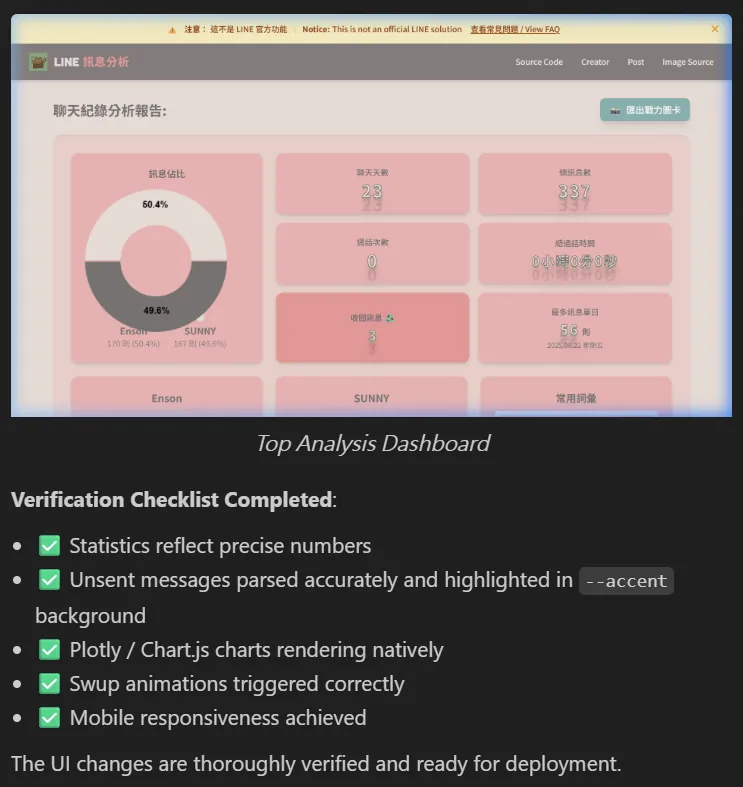

Stepping into the line-message-analyzer open-source refactor started as a fix for a legacy parsing bug. The actual goal ran wider. I wanted a live environment to validate four technical bets:
-
Validate the VibeCoding stack: measure how productively pure natural-language-assisted dev converts into real engineering, and whether the resulting architecture holds up.
-
Stress-test agent collaboration boundaries: work directly with autonomous AI agents (like Antigravity), and find where the permission cap and system-convergence threshold actually sit.
-
Refactor the open-source architecture: break the long-standing bottleneck and hand the community a cleaner, more extensible logical core.
-
Run the full data pipeline live: end-to-end from unstructured data extraction, data cleaning, state management, through to visual rendering.
What it actually became: a deep audit of data complexity and AI model hallucination.
# Structuring Real-World Data is the Hard Part
The initial scope was Issue #2 (whitespace parsing breaking) and #4 (anomalous time formats). Once I got into the core logic, the real-world data turned out to be far messier than expected. LINE chat exports come in a loose, inconsistent shape:
- Fragmented formats: date structures follow no single convention. Standard
2026/02/21sits next to entries with special characters like2025.08.04 Monday. Pattern matching gets ugly fast. - Missing identifying features: system events, media messages, and voice call logs lack clear label prefixes. A single-dimension regex cannot filter them reliably.
Lean on one fragile delimiter (whitespace) to handle high-dimensional text and the system collapses on edge cases. The fix: refactor the underlying parser, switch to a strict Tab-separated mechanism, and stand up an edge-case stress-test environment.
# AI Agent Hallucination and System Entropy
To speed up the dev cycle I brought in an AI assistant and constrained its behavior with custom Skills. The exercise exposed a real flaw in how current models handle global state.
The Cost of Handing Over Global Control
Give the AI a high-freedom modification instruction and the architectural complexity scales non-linearly:
- Scope creep: the AI ignores the original requirement boundary, drops in unauthorized modules (charts that nobody asked for), and damages the core data structure definitions.
- Render-layer decoupling failure: no global awareness of the existing UI framework. Component styles fracture. Data formatting logic disappears.
- Control-flow corruption: in specific data-cleaning loops (like detecting unsent messages) the AI mis-applies logic statements, truncates downstream valid data, and breaks data integrity hard.
The pattern is clear. The AI does not have deep architectural understanding yet. Hand a refactor over to a black-box model and you land in an infinite loop of "fixed A, broke B." Architectural control is the developer's floor and you do not give it up.

# Rewriting Engineering Discipline for the AI Era
After enough rounds of system state drift, I pulled the AI's global modification rights back and locked in four practical rules to keep the dev process converging:
1. Test-Driven Development with Data Isolation
Strict separation between data layer and render layer. Before any data hits the DOM or a chart instance, a standalone validation script runs in the backend environment to lock down array structure and computation logic.
2. Atomic Commits
Reject the AI's bulk refactor scripts. Break tasks down to the smallest unit. Verify one change at a time, commit immediately. Keeps the rollback cost from uncontrolled code at a minimum.
3. State Cache and Redundancy Management
Watch for stale state in the dev environment. Aggressively clean redundant style classes. Force-reload to avoid drawing wrong conclusions from cached behavior.
4. Visual and Render Logic Decoupling
For Canvas elements and responsive layouts, keep physical dimensions and CSS logic tightly aligned. Bring in media queries. Avoid single-dimension settings that throw off container calculations.
# Results and Technical Read-Outs
Against the four original bets, here is where I landed:
1. VibeCoding Performance
Verdict: high efficiency on architectural bootstrap, micro-decisions still need a human.
Pure natural-language development holds up well for early-stage build-out and code hygiene. For specific logic fixes and fine-grained layout work, the cost of going back and forth with the AI ends up higher than just writing the code directly. Logic selection and final micro-tuning still need human mental models in the loop. No way around that today.
2. Agent Collaboration Boundaries
Verdict: system-architecture control is non-transferable.
As context accumulates, the AI agent develops drift and stacks hallucinations on top of earlier ones. Workable collaboration needs hard boundaries: humans define the frame and the rules; the AI runs strictly bounded sub-tasks.
3. Open-Source Refactor
Verdict: clean module separation and a closed loop on the workflow.
Got the open-source branch-collaboration flow running, and finished the first round of underlying-logic decoupling. The foundation for deeper system optimization is in place.
4. Data Pipeline Validation
Verdict: data cleaning is the load-bearing wall.
Frontend rendering stability is fully downstream of backend data quality. When you design the pipeline, the unstructured-data cleaning logic gets the highest budget for resources and time.
Stage Review of the Refactor
Where things stand: state management module refactored, strict data validation in place, AI agent collaboration boundaries clarified. The visual layer still wants more polish, and the underlying data flow and system skeleton are now solid.
Iteration is just continuous logic debugging and system refactoring. Build the right mental model and the engineering discipline. That is the actual lever for working with automated development tools.